Project overview
Separate studies examined supplied spark-ignition and compression-ignition engine datasets across spark timing, load, mixture, EGR, and injection sweeps. The work connected cylinder-pressure records with engineering metrics used to evaluate calibration choices.
Cylinder-pressure processing
{kind=link}
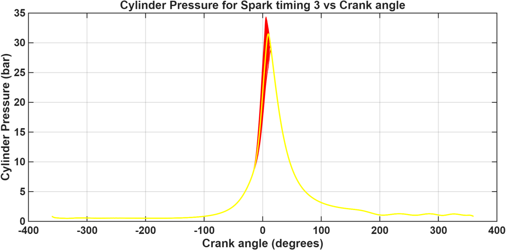
{kind=link}
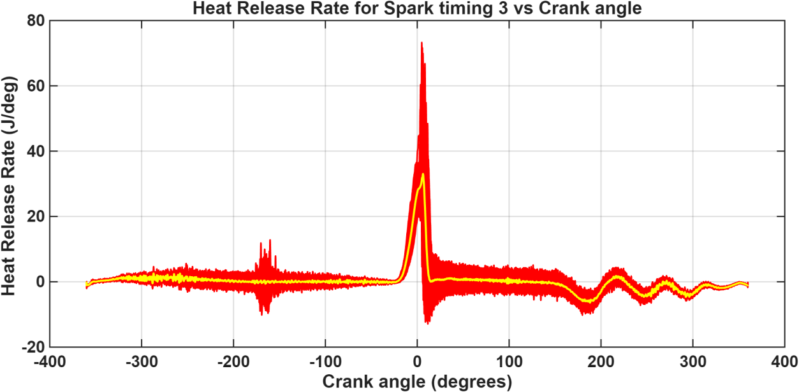
Pressure–volume integration provided indicated work. Integrating and normalizing apparent heat release provided combustion progress and CA10, CA50, and CA90: crank angles corresponding to 10%, 50%, and 90% combustion progress.
Spark-timing analysis
{kind=link}
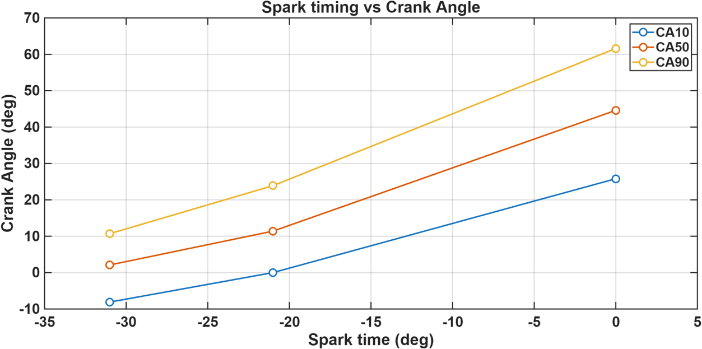
| Spark timing | Net IMEP | Reported net indicated efficiency |
|---|---|---|
| 0° BTDC | 1.913 bar | 21.5% |
| 21° BTDC | 3.200 bar | 36.5% |
| 31° BTDC | 3.167 bar | 36.6% |
The highest reported efficiency occurred at 31° BTDC among the three sampled timings. The two advanced cases differ by only 0.1 percentage point, so this comparison does not establish a global optimum.
Knock investigation
{kind=link}
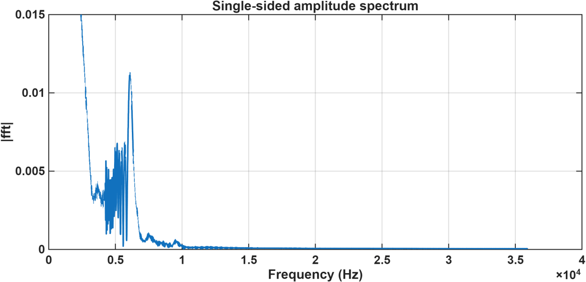
The spectrum complements time-domain pressure analysis when investigating knock-related oscillations. The study demonstrates signal analysis of engine measurements.
Injection-timing tradeoffs
{kind=link}
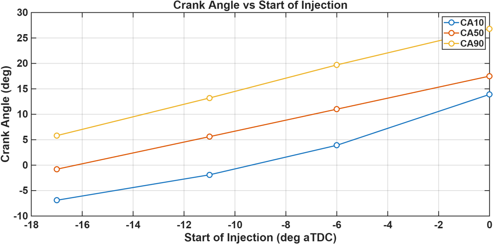
{kind=link}
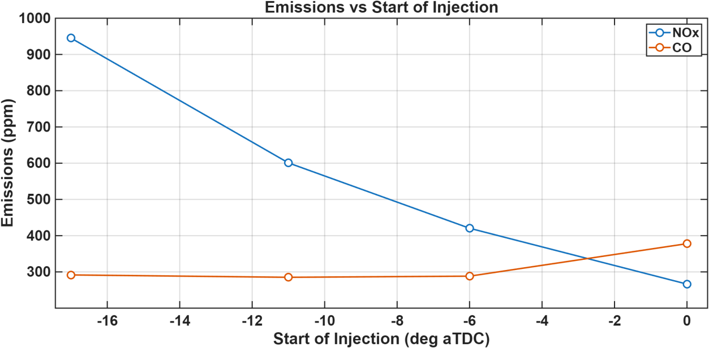
The sweep covers pilot start of injection from 17° before TDC to TDC. Emissions are measured concentrations in ppm. Comparing them with combustion phasing makes the competing calibration objectives explicit.
Injection-pressure sensitivity
{kind=link}
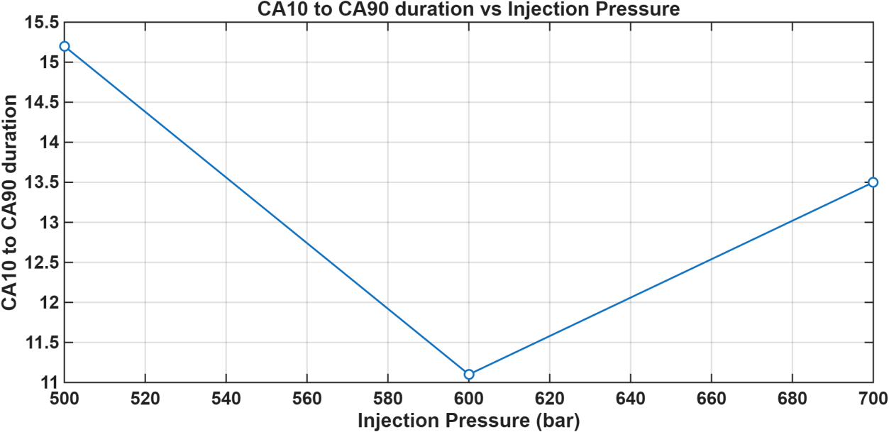
{kind=link}
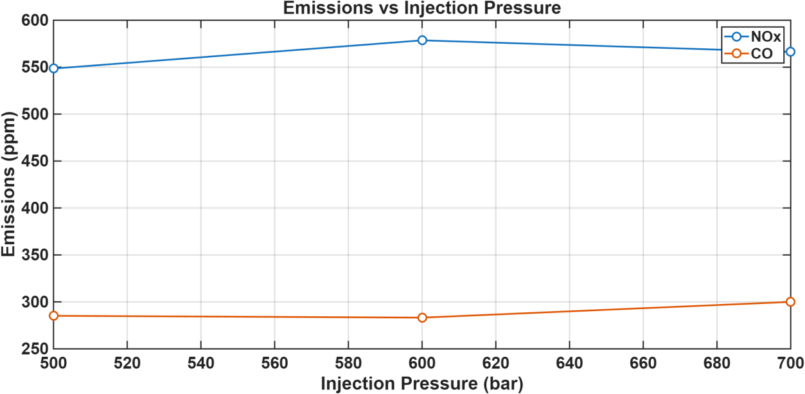
Burn duration is approximately 15° at 500 bar, 11° at 600 bar, and 13.5° at 700 bar. The tradeoff shows why a single combustion metric does not determine the preferred setting.
Reduced-order combustion model
The combustion study combines discretized compression and expansion with a Wiebe-function representation of heat addition. Comparison with experimental data tests how well the model captures the main pressure and heat-release behavior.
{kind=link}
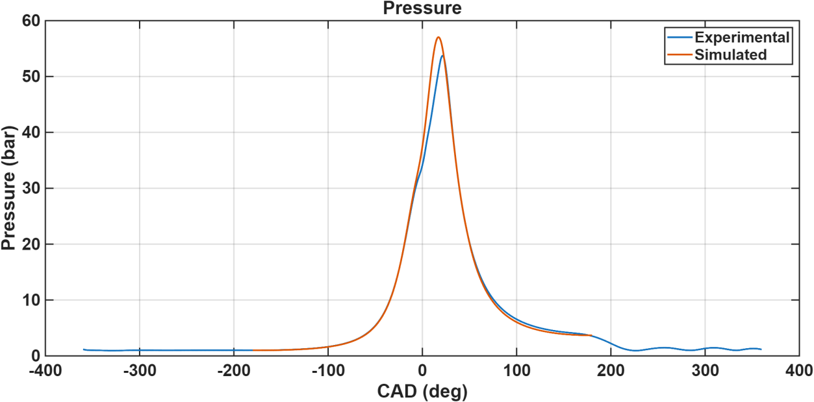
{kind=link}
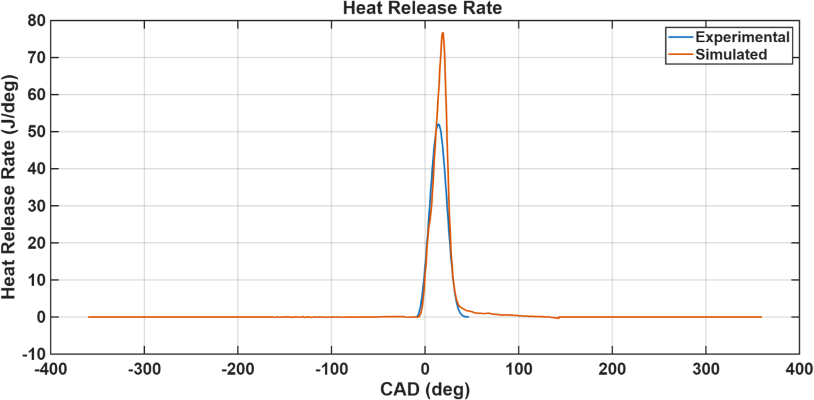
| Reported metric | Simulation | Experimental result |
|---|---|---|
| Gross IMEP | 1,030.1 kPa | 919.0 kPa |
| Gross fuel-conversion efficiency | 41.01% | 36.59% |
The reported model overpredicts gross IMEP by approximately 12.1% and gross fuel-conversion efficiency by 4.42 percentage points. These discrepancies provide a basis for further model refinement.
Supporting analytical work
Additional MATLAB studies examined temperature-dependent specific-heat ratios and numerical resolution during compression. A valve-flow study used compressible-flow equations to compare intake and exhaust flow across choked and unchoked conditions.
{kind=link}
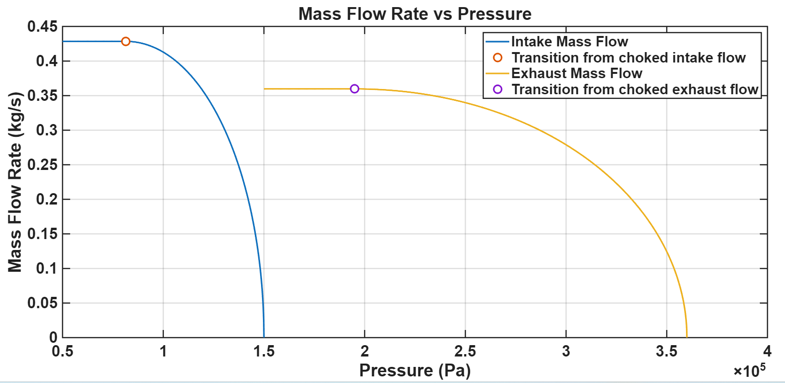
Results and interpretation
The engine-data studies connected calibration settings with combustion phasing, indicated performance, and emissions tradeoffs. The model comparison quantified discrepancies in gross IMEP and fuel-conversion efficiency, identifying where the reduced-order representation needs refinement.
These results describe the sampled datasets and analytical models. They support calibration analysis without establishing a globally optimal setting.